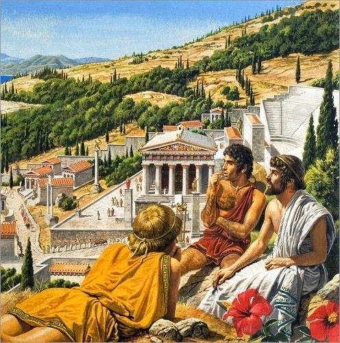
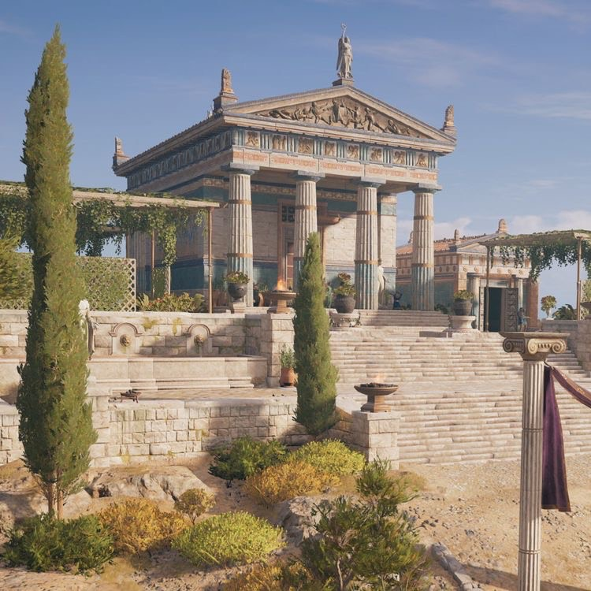

је термин који означава период европске политичке и културне историје у којем су водећу улогу имале стара Грчка и Рим. Први пут су га употребили ренесансни писци који су правили разлику између антике, средњег века и новијег времена у коме су они живели, јер се о старим Грцима и Римљанима генерално говорило као о „старима“, док се о културама и цивилизацијама које су им претходиле није знало готово ништа све до 19. века.
Oбухвата период од преко 15 векова, од 1000. п.н.е. до пада Западног римског царства 476. године н.е
Представља грчко-римску културу, која је играла главну улогу у медитеранској сфери утицаја и у стварању западне цивилизације, обликујући тако различите области као што су право, архитектура, уметност, језик, поезија, реторика, политика и филозофија.


Антички период уобичајено се дели у три подраздобља:
Грчко доба
у првом раздобљу култура, иако доноси изванредне новине, још увек је маргинална у односу на старе цивилизације и велике силе онога доба.
Хеленизам
термин који се користи да би дефинисао период античке историје измећу смрти Александра Македонског и Римског освајања Птолемејског Египта.
Римско раздобље
разни историчари различито означавају када престаје раздобље хеленизма, а започиње римско раздобље. Почиње негде у периоду од 201. п.н.е. (крај Другог пунског рата) до 30. п.н.е. (Египат, посљедње краљевство под хеленистичком динанстијом, пада под римску власт). У културном смислу, Римско раздобље је наставак хеленизма.